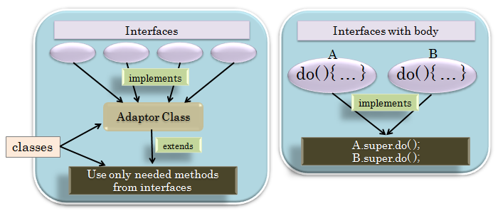
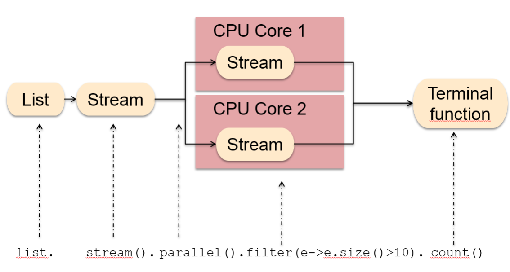
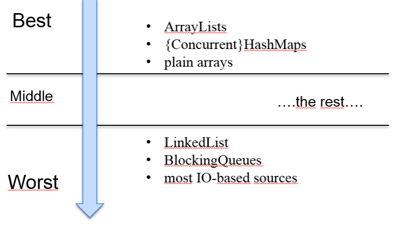
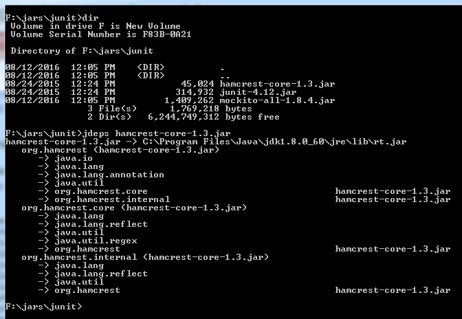
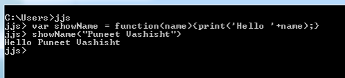

Java 8
Java 8 is by any means a major release since Java 5 (released in 2004).
- It brings tons of new features to the Java as
- A Language
- Its compiler
- Tools
- JVM
- And more...
Interface’s Default
- Each interface must provide so called default implementation.
- Java 8 reduces the need of adaptor class.

Interface’s Default
- Default methods added to java.util.Collection interface :
- stream()
- parallelStream()
- filter()
- forEach()
- removeIf()
- & more...
Lambdas
Language designers put a lot of thought on how to make already existing functionality lambda-friendly.
Lambdas are also known as closures.
Equivalent to JavaScript Arrow Functions.
Lambdas
String[] names = {
"Green Anaconda",
"Elephant"
};
List animals = new ArrayList<>(Arrays.asList(names));
animals.forEach(animal -> System.out.println(animal));
animals.forEach(System.out::println);
animals.stream().forEach(System.out::println);
animals.stream()
.filter(animal -> animal.startsWith("G"))
.forEach(System.out::println);
animals.stream()
.filter(animal -> animal.length() > 8)
.map(animal -> animal.toUpperCase())
.forEach(System.out::println);
Java8 Stream
-
Once you have a Stream object, you can use a variety of methods to transform it into another Stream object.
- List list = Arrays.asList(1, 2, 3, 4);
- list.stream(). ...
Filter
- We have seen that the map method processes every single element in a Stream object.
- You might not always want that.
- Sometimes, you might want to work with only a subset of the elements.
- Just like the map method, the filter method expects a lambda expression as its argument.
- However, the lambda expression passed to it must always return a boolean value
- Which determines whether or not the processed element should belong to the resulting Stream object.
Java8 forEach
- Iterate over a List or any Collection without using any loop in Java.
- forEach() method provides several advantage over traditional for loop.
- Execute it in parallel by just using a parallel Stream instead of regular stream.
Java8 forEach
- Important things to remember:
- There are two forEach() method in Java 8
- One defined inside Iterable and other inside java.util.stream.Stream class.
- If purpose of forEach() is just iteration then you can directly call it
- If you want to perform some operations e.g. filter or map then better first get the stream and then perform that operation and finally call forEach() method.
- forEach mehtod does not work with Arrays
-
String[] names = {"Blue Whale", "Green Anaconda", "The Ostrich"};
names.forEach((name)->{System.out.println(name);});
Above code will produce compile time error.
Map vs Reduce vs MapToInt
Map vs Reduce vs MapToInt
- Reduction Operations
- Also called terminal operations
- Always present at the end of a chain of Stream methods.
- Perform arithmetic operations on Stream objects and get numbers as results.
- Java 8 includes several reduction methods, such as sum, average and count
Map vs Reduce vs MapToInt
-
Reduce
- If you want to perform more complex reduction operations, you must use the reduce method.
-
int startsWith = 0;
//By default start value is 0. Result will be sum of squares of array.
Integer sumOfSquares = list.stream()
.reduce(startsWith, (accumulator, element) ->
accumulator+element*element
);
- The reduction function is a BinaryOperator
- It gets passed two Integer values, unboxes them, adds them, and then re-boxes the result.
Map vs Reduce vs MapToInt
- MapToInt
- Unboxes the Integer elements from the list once and then works with primitive int values from that point on as an IntStream
Parallel stream processing
Parallel stream processing

Parallel stream processing
Question: When to use parallel-streams and when a serial stream?
- The parallel stream uses the Fork/Join Framework for processing.
- The stream-source is getting forked (splitted)
- And hands over to the fork/join-pool workers for execution.
- But all stream-sources can not be splitted as good as others.
Parallel stream processing
- Think about an ArrayList which internal data representation based upon an array.
- Splitting such a source is pretty easy
- It is possible to calculate the index of the middle element and split-up the array.
Parallel stream processing
- If we have a LinkedList it’s more complicated to split the data elements.
- The implementation has to go through all elements.
- From the first entry to find the element where the split can be done.
- So LinkedLists performs badly for parallel streams.
Parallel stream processing

Parallel stream processing
- Source collection must be efficiently splittable.
- But Parallel stream processing is getting more and more worthwhile when the function which is executed per element is more complex.
Parallel stream processing
- Think about TicTacToe-game
- The evaluation of every move is also such an example.
- Many evaluations can be done in parallel.
- And result would be a large number of possible next moves in lesser time.
Method References
- Help to point to methods by their names.
- Described using :: (double colon) symbol.
- can be used to point the following types of methods -
- Static methods
- Instance methods
- Constructors using new operator
Static method reference
- lambda expression:
- (args) -> Class.staticMethod(args)
- method reference:
Instance method reference
- lambda expression:
- (obj, args) -> obj.instanceMethod(args)
- method reference:
- ObjectType::instanceMethod
Constructor method reference
- lambda expression:
- (args) -> new ClassName(args)
- method reference:
Collectors
- Stream.collect() is one of the Java 8’s Stream API's terminal methods.
- It allows to perform mutable fold operations
- Repackaging elements to some data structures and applying some additional logic
- The strategy for this operation is provided via Collector interface implementation.
- All predefined implementations can be found in the Collectors class.
Collectors.toList() / Collectors.toSet()
- ToList collector can be used for collecting all Stream elements into a List instance.
- The important thing to remember
- Can’t assume any particular List implementation with this method.
- Use toCollection, If you want to have more control over this.
List<Integer> result = list.stream()
.collect(toList());
Set<Integer> result = list.stream()
.collect(toSet());
Collectors.toCollection()
Collectors.toMap()
- ToMap collector can be used to collect Stream elements into a Map instance.
- In order to do this, you need to provide two functions:
- keyMapper
- Used for extracting a Map key from a Stream element.
- valueMapper
- Used for extracting a value associated with a given key.
Collectors.toMap()
-
List list = new ArrayList<>();
list.add(new Employee(1, "Mark", new Date()));
list.add(new Employee(2, "Miley", new Date()));
list.add(new Employee(3, "Smith", new Date()));
Map<Integer, String> map1 = list.stream().collect(
Collectors.toMap(Employee::getId, Employee::getName));
System.out.println("Result : " + map1);
Map<Integer, String> map2 = list.stream().collect(
Collectors.toMap(x -> x.getId(), x -> x.getName()));
System.out.println("Result : " + map2);
Collectors.collectingAndThen()
Collectors.joining()
- Joining collector can be used for joining Stream elements.
-
String[] names = {
"Blue Whale",
"Elephant",
"The Ostrich"
};
List list = Arrays.asList(names);
String result = list.stream().collect(joining());
result = list.stream().collect(joining("\n"));
result = list.stream().collect(joining("\t", "Starting-", "-Ending"));
System.out.println(result);
Java8 DateTime API
- There have been several problems with the existing date and time related classes in java, some of them are:
- Java Date Time classes are not defined consistently
- java.util.Date contains both date and time, whereas java.sql.Date contains only date.
- There are no clearly defined classes for time, timestamp, formatting and parsing.
- All the Date classes are mutable.
- Date class doesn’t provide internationalization, there is no timezone support.
Java8 DateTime API
- Java Date Time classes are not defined consistently
- We have Date Class in both java.util as well as java.sql packages.
- Formatting and parsing classes are defined in java.text package.
Java8 DateTime API
- java.util.Date contains both date and time, whereas java.sql.Date contains only date.
- java.sql.Date class doesn’t make sense.
- Also both the classes have same name, that is a very bad design itself.
Java8 DateTime API
- There are no clearly defined classes for time, timestamp, formatting and parsing.
- We have java.text.DateFormat abstract class for parsing and formatting need.
- Usually SimpleDateFormat class is used for parsing and formatting.
Java8 DateTime API
- All the Date classes are mutable
- So they are not thread safe.
- It’s one of the biggest problem with Java Date and Calendar classes.
Java8 DateTime API
- Date class doesn’t provide internationalization, there is no timezone support.
- So java.util.Calendar and java.util.TimeZone classes were introduced
- But they also have all the problems listed above.
Java8 DateTime API
- Java8 Date is designed to overcome all the flaws in the legacy date time implementations. Some of the design principles of new Date Time API are:
- Immutability
- Separation of Concerns
- Clarity
- Utility operations
- Extendable
Java8 DateTime API
- Immutability
- All the classes in the new Date Time API are immutable
- Thus good for multithreaded environments.
Java8 DateTime API
- Separation of Concerns
- The new API separates clearly between human readable date time and machine time (unix timestamp).
- It defines separate classes for Date, Time, DateTime, Timestamp, Timezone etc.
Java8 DateTime API
- Clarity
- The methods are clearly defined and perform the same action in all the classes.
- For example
- To get the current instance we have now() method.
- There are format() and parse() methods defined in all these classes rather than having a separate class for them.
- All the classes use Factory Pattern and Strategy Pattern for better handling. Once you have used the method of the class, working with other classes won’t be hard.
Java8 DateTime API
- Utility operations
- All the new Date Time API classes comes with methods to perform common tasks.
- Plus, minus, format, parsing, getting separate part in date/time etc.
Java8 DateTime API
- Extendable
- The new Date Time API works on ISO-8601 calendar system but we can use it with other non ISO calendars as well.
Java8 Date Time API packages
- java.time Package
- This is the base package of new Java Date Time API. All the major base classes are part of this package, such as LocalDate, LocalTime, LocalDateTime, Instant, Period, Duration etc.
- All of these classes are immutable and thread safe. Most of the times, these classes will be sufficient for handling common requirements.
Java8 Date Time API packages
- java.time.chrono Package
- This package defines generic APIs for non ISO calendar systems.
- Extend AbstractChronology class to create your own calendar system.
Java8 Date Time API packages
- java.time.format Package
- This package contains classes used for formatting and parsing date time objects.
- Most of the times, we would not be directly using them because principle classes in java.time package provide formatting and parsing methods.
Java8 Date Time API packages
- java.time.temporal Package
- This package contains temporal objects and we can use it for find out specific date or time related to date/time object
- For example, we can use these to find out the first or last day of the month.
Java8 Date Time API packages
- java.time.zone Package
- This package contains classes for supporting different time zones and their rules.
LocalDate
- Immutable class that represents Date with default format of yyyy-MM-dd.
- We can use now() method to get the current date.
- We can also provide input arguments for year, month and date to create LocalDate instance.
- This class provides overloaded method for now() where we can pass ZoneId for getting date in specific time zone.
- This class provides the same functionality as java.sql.Date. Let’s look at a simple example for it’s usage.
LocalTime
- Immutable class whose instance represents a time in the human readable format.
- Default format is hh:mm:ss.zzz.
- Just like LocalDate, this class provides time zone support and creating instance by passing hour, minute and second as input arguments.
LocalDateTime
- Immutable date-time object that represents a date-time, with default format as yyyy-MM-dd-HH-mm-ss.zzz.
- It provides a factory method that takes LocalDate and LocalTime input arguments to create LocalDateTime instance.
Instant
- Instant class is used to work with machine readable time format, it stores date time in unix timestamp.
- If you live in Germany and create a LocalDateTime instance and someone else lives in USA and creates another instance at the very same moment (provided the clocks are properly set) - the value of those objects would actually be different. This does not apply to Instant, which is calculated independently from time zone.
Better Type Inference
package com.domshom.java8;
public class DriverAge< T > {
public static< T > T defaultAge() {
return null;
}
public T getOrDefault( T age, T defaultAge ) {
return ( age != null ) ? age : defaultAge;
}
}
public static void main(String[] args) {
final DriverAge< Integer > age = new DriverAge<>();
value.getOrDefault( 22, DriverAge.defaultAge() );
}
In Java 7, the same example will not compile.
DriverAge.< Integer >defaultAge()
Optional
- The famous NullPointerException is by far the most popular cause of Java application failures.
- Developers are encouraged to write cleaner code.
- Optional is just a container:
- It can hold a value of some type T or just be null.
- It provides a lot of useful methods so the explicit null checks have no excuse anymore.
Optional
Optional< String > empName = Optional.ofNullable( null );
System.out.println( "Full Name is set? " + empName.isPresent() );
System.out.println( "Full Name: " + empName.orElseGet(
() -> "[unknown]" )
);
System.out.println( empName
.map( name -> "Hello " + name + "!" )
.orElse( "Hello Friend !" )
);
Optional
Optional< String > empName = Optional.of( "Mark" );
System.out.println( "Employee Name is set? " + empName.isPresent() );
System.out.println( "Employee Name: " + empName.orElseGet( () -> "[unknown]" ) );
System.out.println( empName.map( name -> "Hello " + name + "!" ).orElse( "Hello Friend !" ) );
System.out.println();
Output:
Full Name is set? True
Full Name: Mark
Hello Mark !
Base64
- Finally, Java standard library supports Base64 encoding.
import java.nio.charset.StandardCharsets;
import java.util.Base64;
public class Base64sDemo {
public static void main(String[] args) {
final String someText = "Java8 is Gr8!";
final String encodedText = Base64.getEncoder().encodeToString( someText.getBytes( StandardCharsets.UTF_8 ) );
System.out.println( encodedText );
final String decodedText = new String( Base64.getDecoder().decode( encodedText ), StandardCharsets.UTF_8 );
System.out.println( decodedText );
}
}
Concurrency
- New methods have been added to the java.util.concurrent.ConcurrentHashMap class to support aggregate operations based on the newly added streams facility and lambda expressions.
- Also, new methods have been added to the java.util.concurrent.ForkJoinPool class to support a common pool.
Concurrency
- The new java.util.concurrent.locks.StampedLock class has been added to provide a capability-based lock with three modes for controlling read/write access.
- New classes added in java.util.concurrent.atomic package:
- DoubleAccumulator
- DoubleAdder
- LongAccumulator
- LongAdder
Class dependency analyzer: jdeps
- jdeps: a great command line tool.
- Prints the package-level or class-level dependencies of Java class files.
- Can accept .class file, a directory, or JAR file as an input.
Class dependency analyzer: jdeps

Changes in JVM
- The PermGen space is gone and has been replaced with Metaspace (JEP 122).
- The JVM option -XX:PermSize has been replaced by -XX:MetaSpaceSize.
- The JVM option –XX:MaxPermSize has been replaced by -XX:MaxMetaspaceSize.
Nashorn
- A Next-Generation JavaScript Engine for the JVM.

- Read hello.js file
$ jjs hello.js